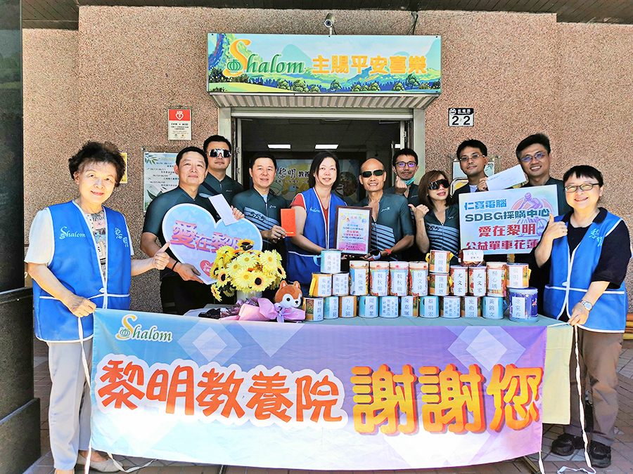

Neal Liang's Personal Studio
簡介
我是梁如澤 目前38歲 材料半導體相關領域畢業 因為家裡母親年邁 父親已經過世 所以需要擔負養家的責任 無法過產線或輪班的生活 因此因緣際會下 我轉往AI人工智慧相關的產業工作 在工作的過程中 發現許多專案相關的技術內容 都和前後端有相當多的技術相關 所以邊採用邊做邊學 不懂就上網查資料的方式 目前雖然有些技術都有概念 但是並不紮實 也沒有技術底子 因此希望藉由Wehelp 能夠自己做出一些東西 熟悉常用的工具及技術手段 並且往全端工程師的路前進
真誠與誠信 是人與人最基本的交往原則
轉職預備及目標
為了成為軟體工程師，做過什麼努力
為了成為軟體工程師 2023年開始我有去上幾門線上課程 包含以下幾個：
- Udemy: python基礎入門課程
- Hiskio: NLP自然語言處理課程
- Hiskio: Keras深度學習基礎課程
- 彭彭老師的課程: HTML,CSS,JavaScript網頁前端工程課
如果參與這個訓練，會怎麼安排學習時間？
因為平常需要工作 所以預估時間安排如下：
- 週一到週五：晚上6點以後到12點可以學習並且做專案
- 週六：全天拿來學習和做專案
- 週日：下午1點到晚上12點拿來學習和做專案
是否有想要加入的公司？為什麼想加入該公司？
FAANG類的公司 或者 尋找遠距工作的機會 原因如下：
- 可以接觸前沿的研究及應用
- 可以接觸到許多不同見解的同儕或前輩
- 希望可以作一些能夠貢獻人類或者造福弱勢團體的應用
- 遠距工作的部分 則是希望可以就近照顧家人

請描述一件產生明顯負面情緒的經歷，如何處理該情緒？
在公司曾經遇到前輩不明究裡的責罵 當下心情是相當不舒服的 後來我的處理方式就是喝杯咖啡走一走 想想我在公司的工作目標是甚麼 我的人生目的是甚麼 慢慢地這些情緒就會淡化
網頁技術
關於這份申請網頁，分享一個開發時的技術心得。
我自己其實並沒有碰過跟前端有關的東西 所以是申請這個bootcamp的時候 第一次接觸html、CSS、Javascript這些東西 也是在短時間看完彭彭老師的課程後 對前端的東西開始有一點概念
一開始聽老師的課 吸收起來很快 當下也跟著做了練習 但是隔天真的開始要實作的時候 發現自己也忘了不少 同時也混淆了class和id div和span等等 所以在趕緊回去看自己的筆記後 慢慢地再建構起來 然後再逐行逐句地把整個框架和內容 像拼積木一樣的慢慢搭建起來
當把基本的內容都打完以後 我開始想說去美化一下內容 於是便在網上各種搜尋 也發現原來有非常多現成的素材 以及做好的文字特效 加以使用的話 可以省下更多時間去看別的東西 因此 我選了幾個美化特效後 改編成自己要用的部分 然後套用起來
另外 現在蠻多網站都有3D的設計 技術看起來使用了Three.js OpenGL WebGL等等 看起來不算是我現在可以馬上學會的東西 但希望在之後的訓練中 也能去接觸並使用起來
訓後目標
其他想說的話？
希望在這次申請 可以進入Wehelp的培訓 跟大家一起學習 另外 以下有幾個目標 是我期許自己在這六個月可以達成：
- 專案
- 獨立寫出一套完整的網頁 例如電商和購物網頁等等
- 功能包含聊天傳訊息 會員管理 登入驗證機制 商品資料上傳更新 數據庫存儲 AI客服助手設計及串接等等
- 使用GCP或AWS作為底座支撐服務 設計好security policy以及防火牆
- 後台dashboard展示及各種客流分析及會員喜好分析及推薦
- 技術
- 前端: Vue或者React/React Native, html/css/javascript, typescript
- 後端: python/golang, Flask, RestAPI/FastAPI, Node.js
- 測試: Unit test, Jest或者Mocha或者Cypress
- 資料庫: ElasticSearch, MySQL/PostgreSQL, MongoDB/Cassandra/Redis, Neo4j
- 雲服務: VPC, EC2, ELB, IAM, EIP等等
- Others: Jira, Github, docker, Nginx, WebSocket
- 其他
- 完成50題easy leetcode
- 上完演算法及資料結構